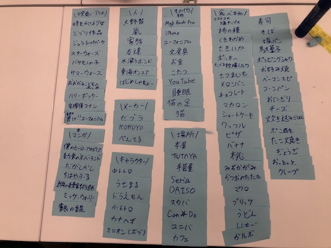
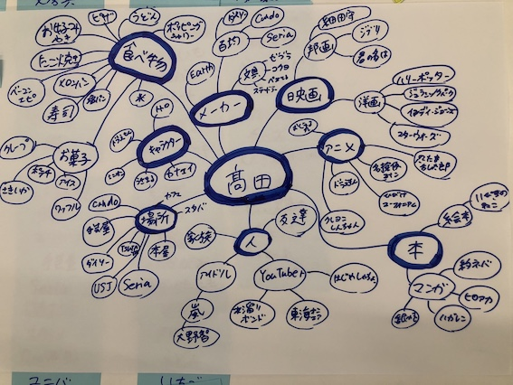

マインドマップ制作
step1:自分の好きなものを100個ほど集める
①嵐・大野智・家族・お好み焼き・たこ焼き
うどん・睡眠・いちご・そば・餃子
②塩パン・コーンパン・ベーコンエピ・おにぎり・炊き込みご飯・ハリーポッター・スターウォーズ・細田守監督作品・宮崎駿監督作品・うさまる
③カナヘイ・ドラえもん・名探偵コナン・約束のネバーランド・僕のヒーローアカデミア・ワンピース・響けユーフォニアム・ユーフォニアム・水溜りボンド・はじめしゃちょー
④セリア・ダイソー・キャンドゥ・文房具・KOKUYO・ぺんてる・ゼブラ・だがしかし・駄菓子・おっとっと
⑤プリッツ・ポッキー・ワッフル・クレープ・ポッピングシャワー・ガルボ・苺のショートケーキ・マカロン・ピザ・モッツァレラチーズ
⑥MOW・さきいか・茎わかめ・とろべ〜・MacBook Pro・iPhone・画材・画材屋・手芸屋・本屋
⑦TUTAYA・スターバックス・ミニオン・USJ・コストコのポテチ・サーモン・マグロ・トロ・焼きハラス・カツオのたたき
⑧ポン酢・You Tube・こたつ・鋼の錬金術師・もも・りんご・バナナ・ミッケ・青の祓魔師・うさコレ
⑨フランスパン・ベーグル・とんかつサンド・カスクート・メロンパン・わらび餅・焼き芋・スイートポテト・苺大福・ミルキー・団子・じゃがビー・シフォンケーキ・求肥・雪見だいふく
⑩伽藍堂のかき氷・抹茶館抹茶ティラミス・Amazon・ポテト・から揚げ棒・ピザまん・ファミチキ・ななチキ・ステテコ・ポテトもち
11.ペンタブレット・ラングドシャ・スヌーピー・脱出ゲーム・グラノーラ・ヨーグルト・ジョア・こんにゃくゼリー・大葉チーズささみカツ・みかん
12.ジュラシックパーク・猫の足・東海オンエア・食べる牧場ミルク・猫・HUNTER×HUNTER
奥大山の天然水・金のミルク・マリオブラザーズ
マリオカート、、、
step2:集めた100個をピンタレストでまとめる
step3:好きなものを付箋に書き、ジャンル分けを行う

step4:付箋をもとにマインドマップ制作

＊私の興味の傾向分析＊（step1~4を通して）
マインドマップを制作して「食べ物」に対しての興味が一番高いことが分かった、
恐らく食事が好きで、常に美味しいものを求めているからだと考えられる。
また、「食べ物」と分類した中でも食感がサクサク・カリカリ・もちもちしているものが好きということや
粉物が好きなことが分かった。マインドマップ全体をまとめると、私の「興味」は
「日本」で生まれたものが大半を占めており、現代の日本が生み出す文化が好きであることが分かった。